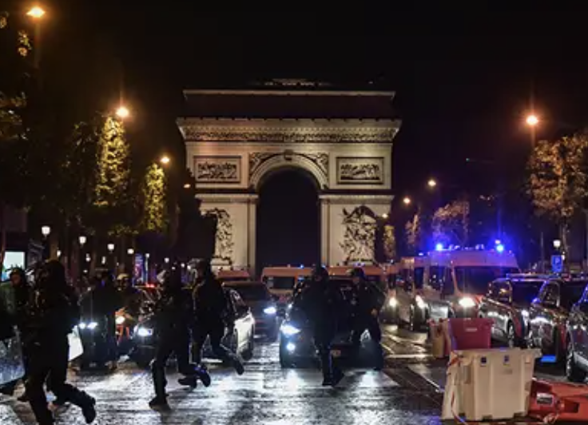
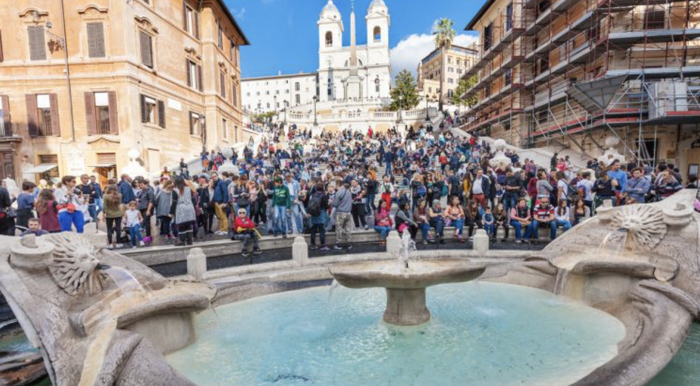

France is not the safest when it comes to travel. Pickpocketing, phone snatching and stealing is very common especially in more touristy areas so it is best to keep a close eye on all personal belongings. A few important things to note would be that it is illegal to photograph security forces, including the police. Police also may randomly conduct searches (especially around the borders) so it is always good to keep some form of identification of you, just be careful it doesn't get stolen.
112= Main Emergency phone number, 15=Ambulance, 17=Police, 18=Fire department
Italy is pretty safe, it is ranked 30-35 safest country in the world according to the U.N. and Global Peace Index. The locals also tend to be more welcoming and open to tourists. However this does not mean there are not still safety precautions you should follow. Pickpocketing is still common around the more touristy areas but as long as you are careful and keep an eye on your belongings you should be fine. Keep cars locked and do not store personal belongings in vehicle, especially if its a rental because thieves will tend to target rental cars. Italy also has a lot of police officers, its 9th in the world ranked for police presence so there is always one nearby.
112= Main Emergency phone number, 118=Ambulance, 113=Police, 115=Fire department
